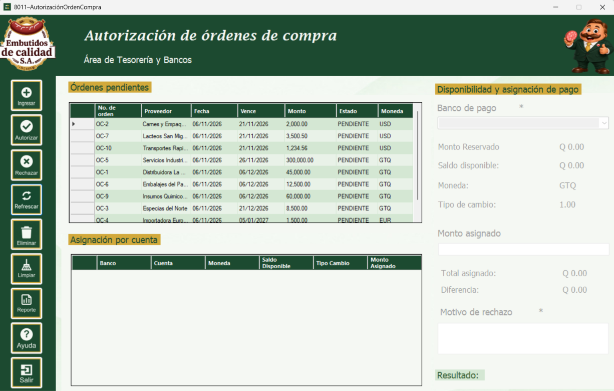
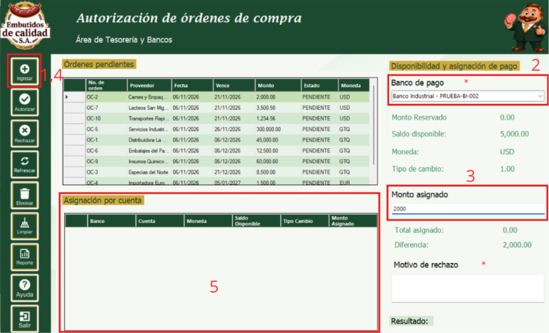
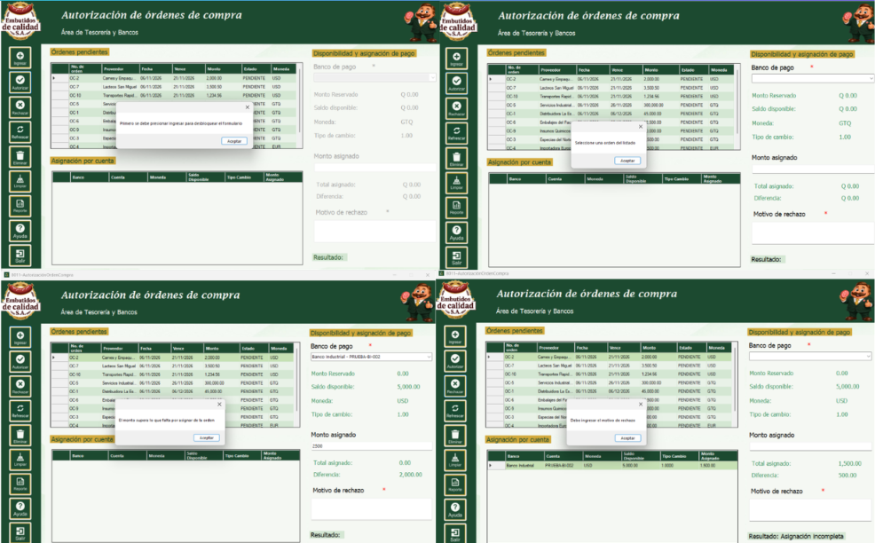
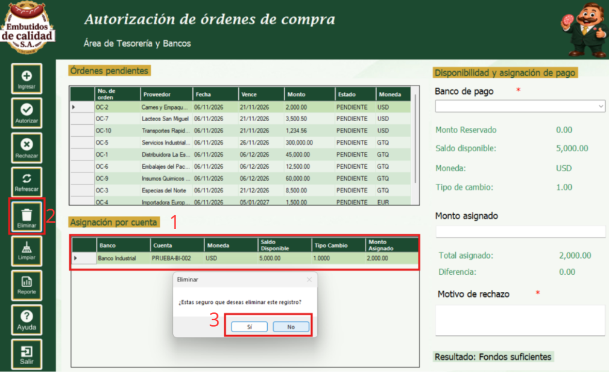
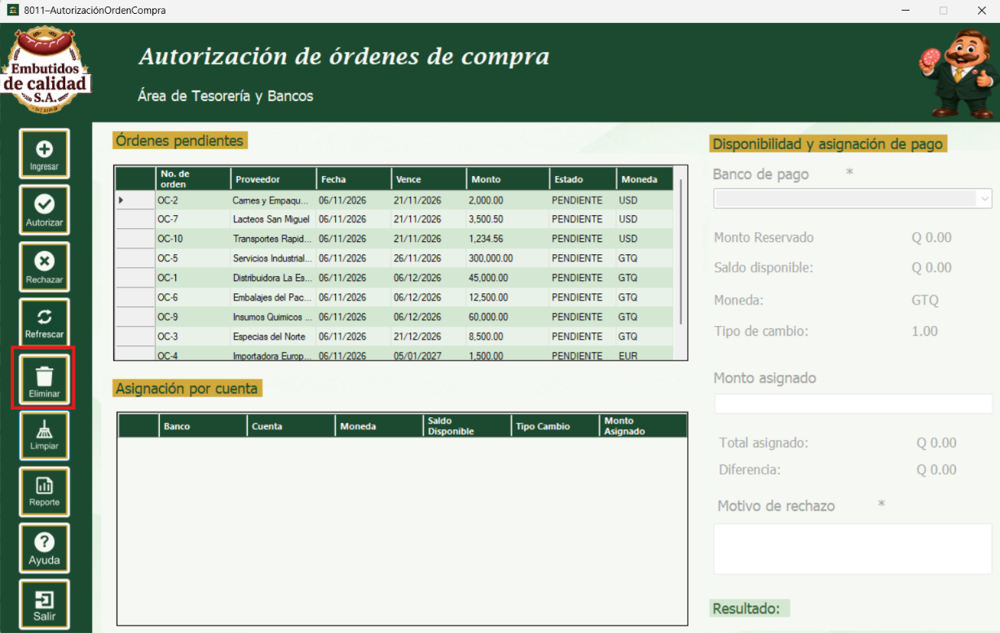
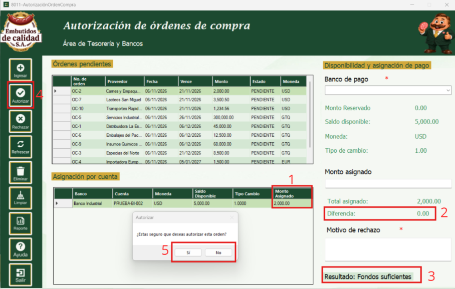
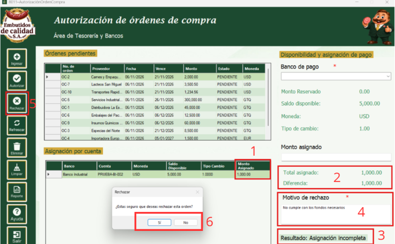
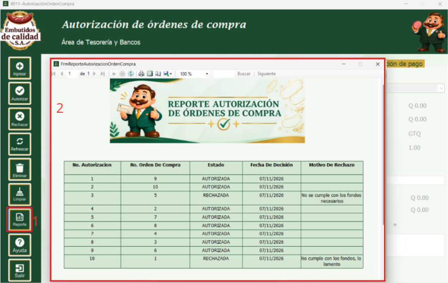
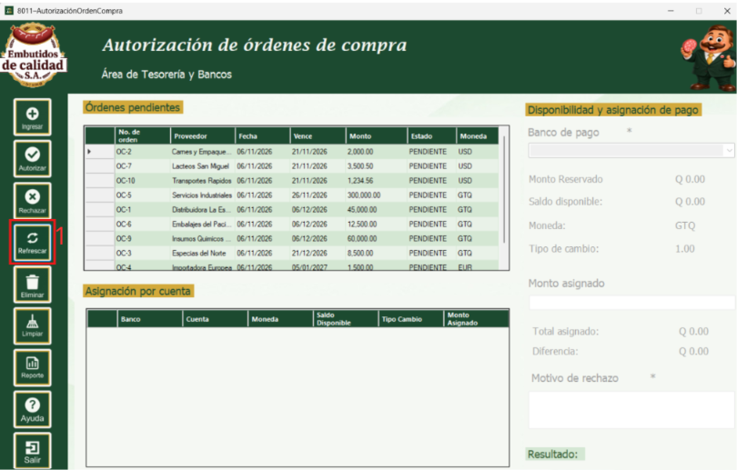
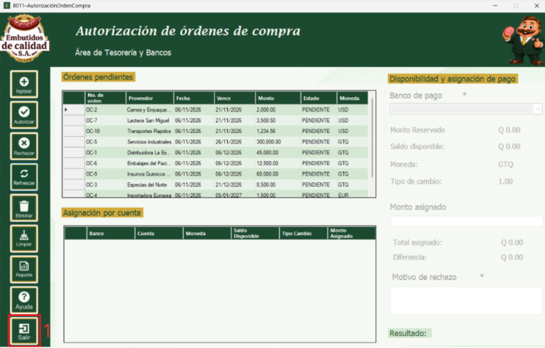

La ventana de Autorización de Órdenes de Compra es parte del módulo Bancos (Tesorería y Bancos)
del sistema, desarrollado para Embutidos de Calidad S.A. Su función principal es revisar las órdenes
de compra que se encuentran pendientes y decidir si se autorizan o se rechazan, verificando que las
cuentas bancarias de la empresa cuenten con fondos suficientes para pagarlas.
Al autorizar una orden, el monto asignado a cada cuenta bancaria queda reservado (comprometido), con
lo cual el saldo disponible de la cuenta disminuye y el pago queda listo para ser generado
posteriormente. Al rechazar una orden, se debe indicar el motivo del rechazo, el cual queda registrado
para que el área de Compras pueda consultarlo.
Esta ventana es la interfaz principal para la autorización de órdenes de compra. En la parte superior
se encuentra la lista de órdenes pendientes y, en la parte inferior, el panel de disponibilidad y
asignación, donde se elige la cuenta bancaria, se indica el monto a asignar y se observan el saldo
disponible, el monto reservado, la moneda, el tipo de cambio, el total asignado y la diferencia
pendiente de asignar. A un costado se encuentra la barra de botones (Ingresar, Eliminar, Limpiar,
Autorizar, Rechazar, Refrescar, Reporte, Ayuda y Salir).
El panel de asignación permanece deshabilitado hasta que se presiona el botón Ingresar. En esta
versión solo se permite asignar cuentas bancarias que tengan la misma moneda que la orden de compra.

El botón Ingresar desbloquea el panel de disponibilidad y asignación. Una vez desbloqueado, se selecciona en la lista la orden de compra que se desea autorizar, se elige el banco de pago en la lista desplegable y se escribe el monto asignado. Al elegir la cuenta, la ventana muestra su saldo disponible, el monto reservado, la moneda y el tipo de cambio. Al presionar nuevamente Ingresar, la cuenta se agrega a la tabla de asignación y los totales se actualizan. Se pueden asignar varias cuentas hasta completar el monto de la orden.

Al asignar una cuenta, la ventana verifica que se haya seleccionado una orden y un banco, que el monto sea válido, que la cuenta no haya sido asignada antes, que el monto no supere lo que falta por asignar de la orden ni el saldo disponible de la cuenta, y que la cuenta tenga la misma moneda que la orden. Si alguna validación no se cumple, se muestra un mensaje indicando el motivo y la cuenta no se agrega.

El botón Eliminar permite quitar una cuenta de la tabla de asignación. Para utilizarlo, se selecciona la fila de la cuenta que se desea quitar y se presiona el botón Eliminar; la ventana solicita confirmación y, al aceptar, los totales se recalculan.

El botón Limpiar descarta lo que se está trabajando: vacía la tabla de asignación, reinicia los totales y los datos de la cuenta, y vuelve a bloquear el panel de asignación. No modifica ninguna orden ni ningún saldo.

El botón Autorizar aprueba la orden seleccionada. Para poder autorizar, el total asignado debe ser igual al monto de la orden. La ventana solicita confirmación y, al aceptar, reserva el monto en cada cuenta asignada (disminuye el saldo disponible y aumenta el monto comprometido), cambia el estado de la orden a Autorizada y muestra el mensaje "Autorizacion Exitosa". La orden deja de aparecer en la lista de pendientes.

El botón Rechazar descarta la orden seleccionada. Antes de presionarlo se debe escribir el motivo del rechazo en el campo correspondiente. La ventana solicita confirmación y, al aceptar, cambia el estado de la orden a Rechazada, guarda el motivo y muestra el mensaje "Rechazo Exitoso". El rechazo no reserva fondos.

El botón Reporte abre una ventana con el listado de las autorizaciones y rechazos de órdenes de compra realizados, junto con la información de las cuentas asignadas.

Al presionar el botón Refrescar, se recargan la lista de órdenes pendientes y la lista de bancos con los datos más recientes del sistema, y la ventana se reinicia con el panel de asignación bloqueado.

El botón Salir cierra la ventana de Autorización de Órdenes de Compra. Los datos que no hayan sido autorizados o rechazados no se guardan.
